A compact toolbar keeps the count, select-all, and Move to space close at hand. Views and sender preferences live under More. Smaller checkboxes retain a clear selected state.
Visual evidence uses demonstration data. Moving conversations requires a connected account, so the demo shows the disabled action and its explanation. Existing API-backed interaction tests exercise move, recovery, and Undo.
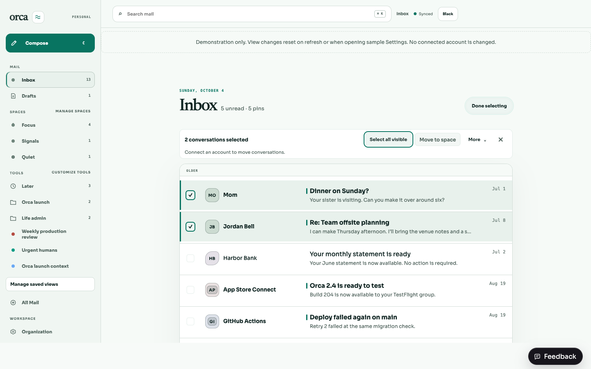
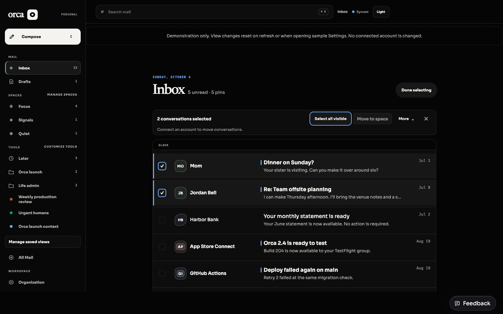
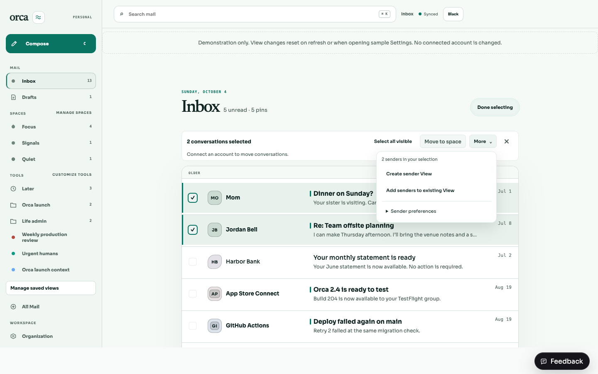
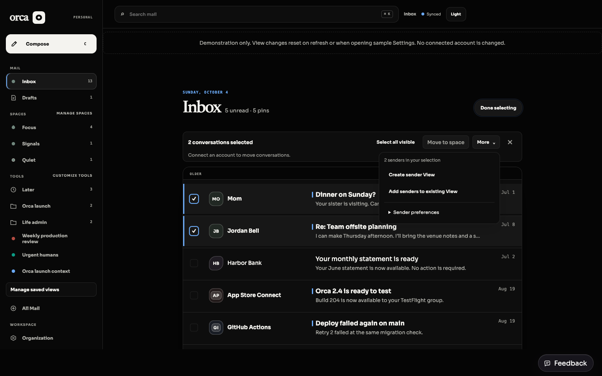
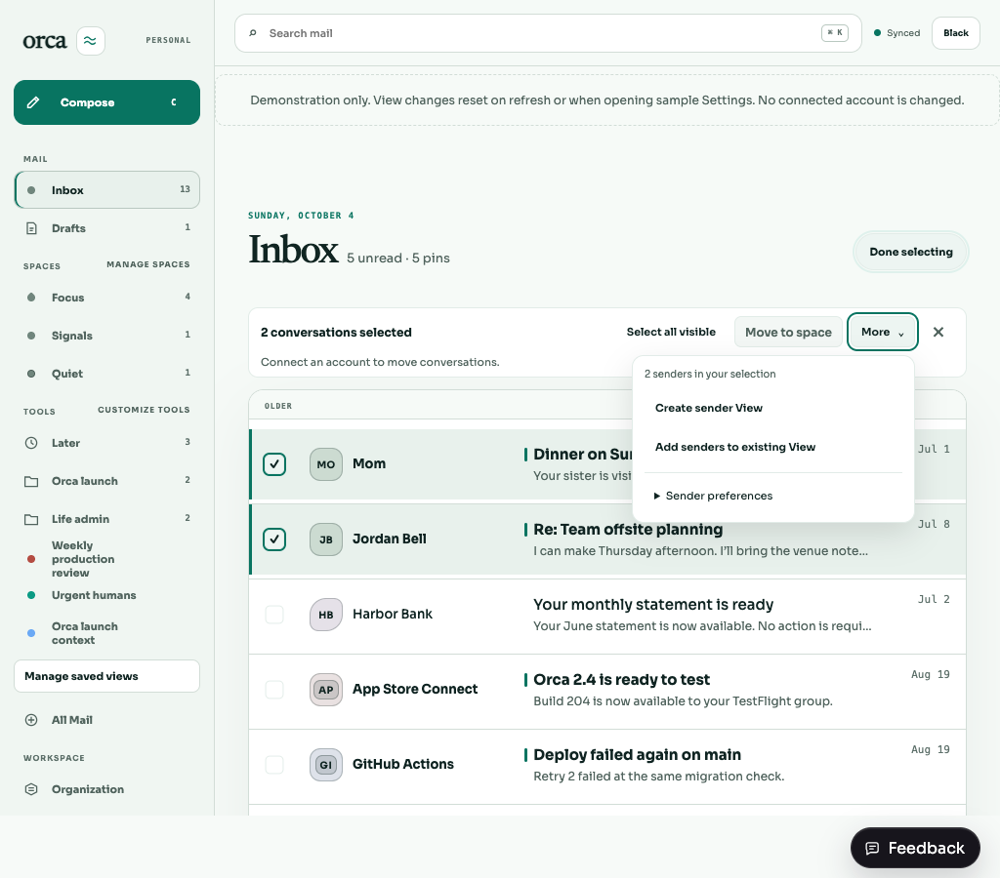
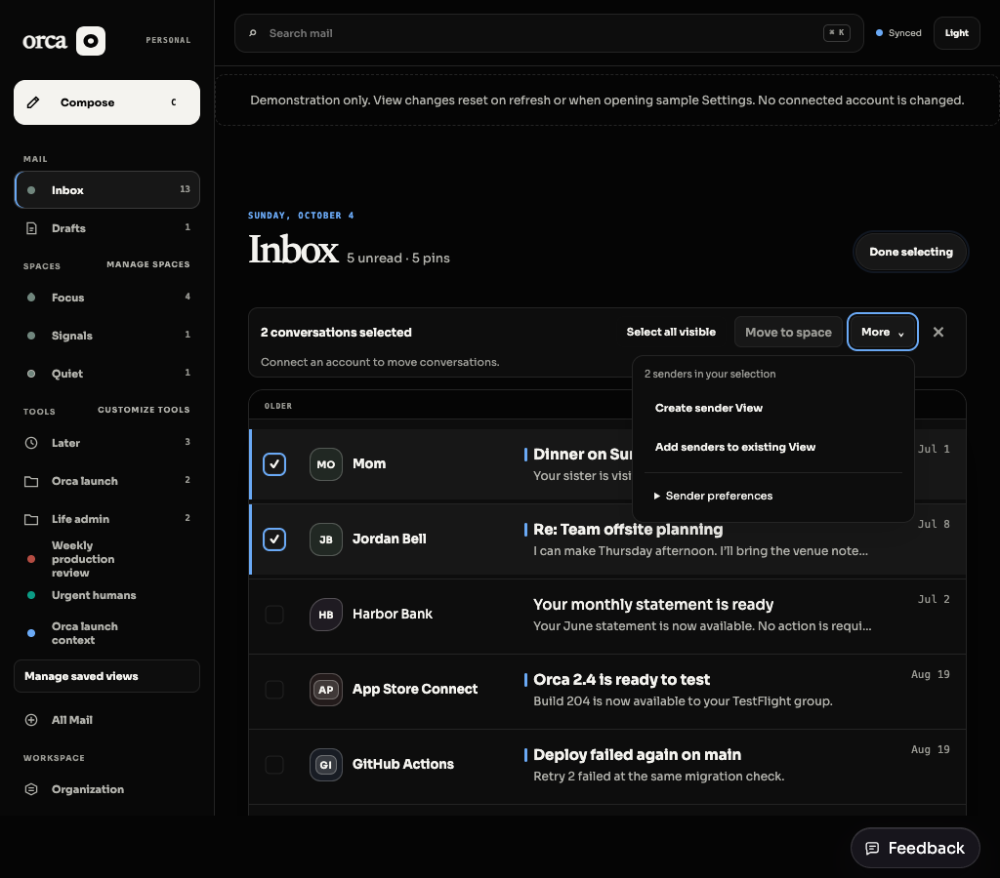
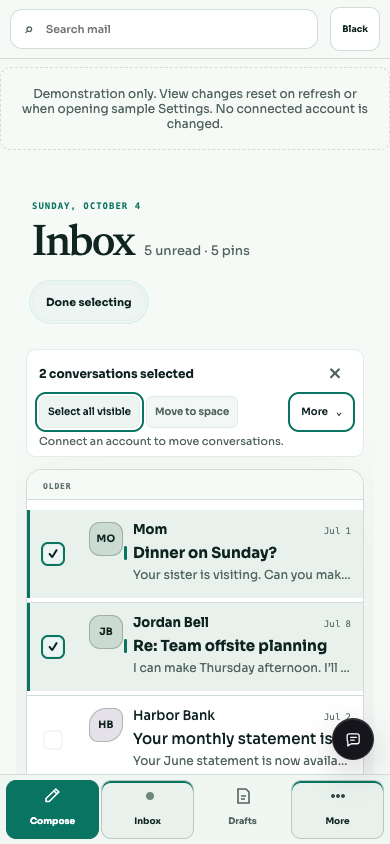
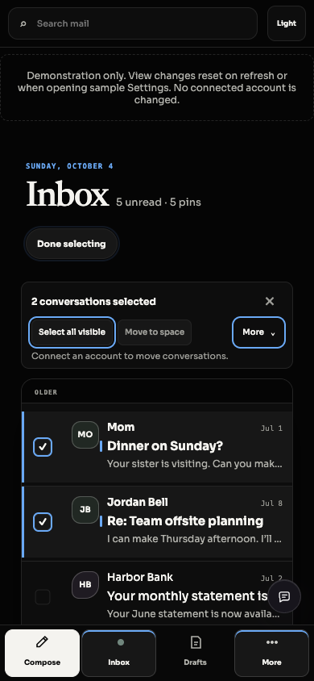
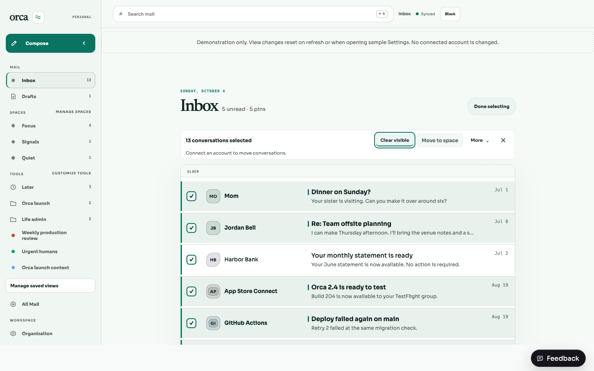
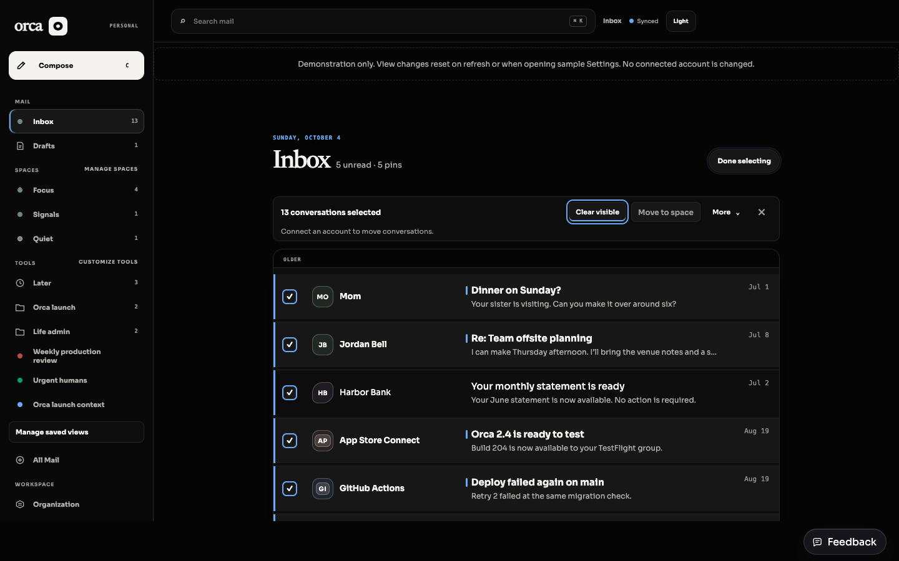
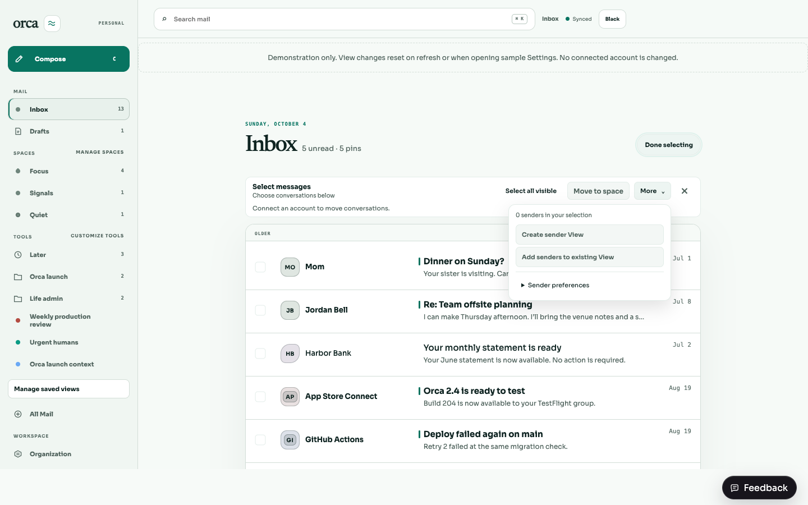
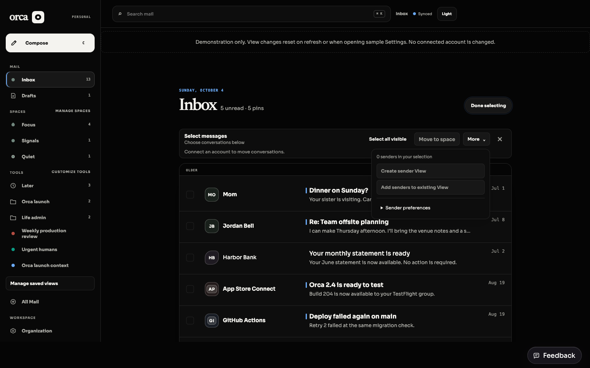
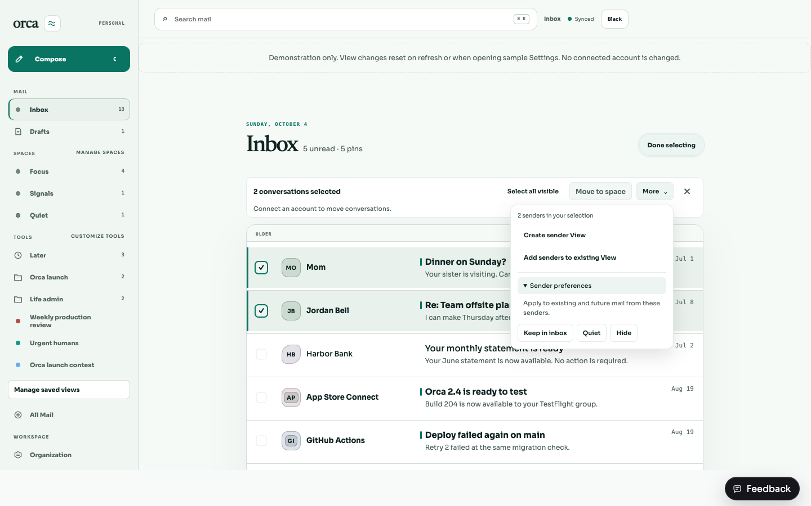
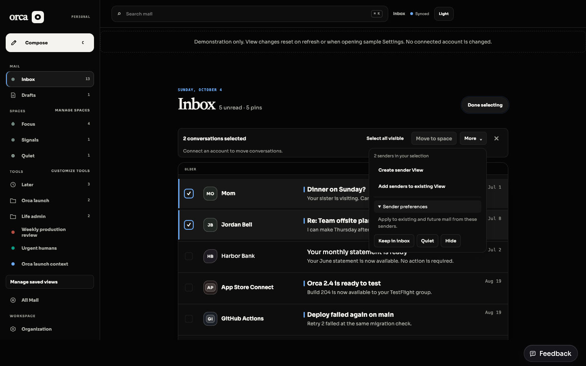
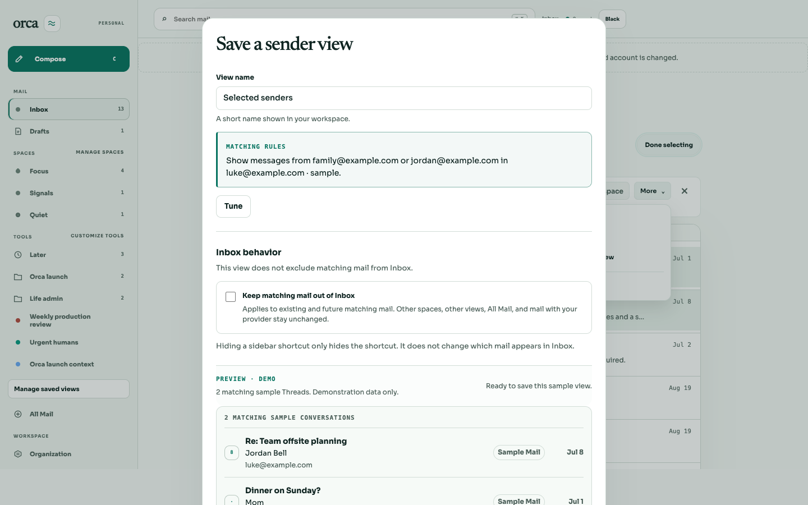
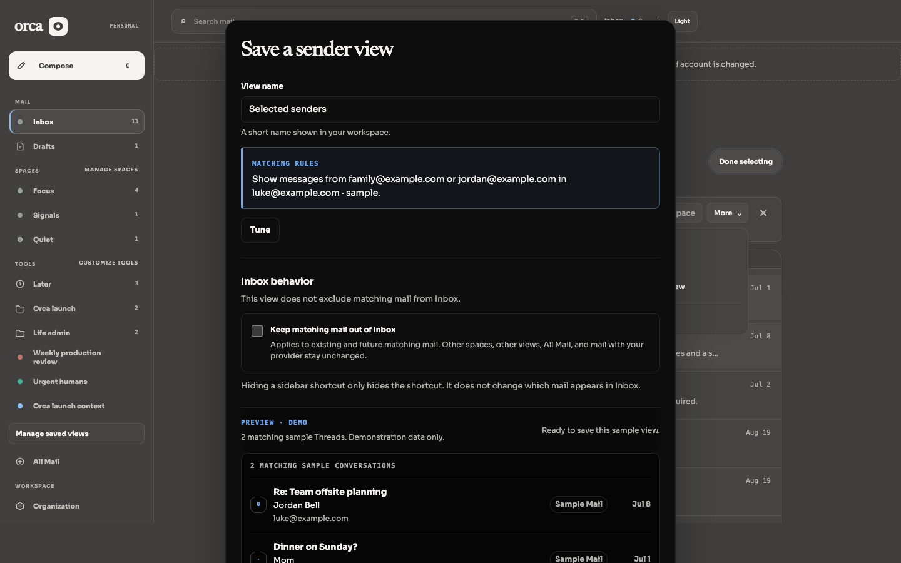
Typecheck, production build, and lint passed. Shared: 95 tests; API: 707 tests. Frontend: 549 passed, 0 failed. Total: 1,351 passed. Validation details. New regression tests cover Escape ordering, outside-click dismissal, exit focus, and preserving selection when returning from View creation.
Six browser layout checks passed across both themes at 1440, 1024, and 390 pixels, with no horizontal overflow and all disclosure panels within the viewport. Layout measurements.
One frontend run hit an existing Undo test’s fixed 20 ms settle timing; its isolated rerun and final full frontend suite passed. No production routing logic changed.